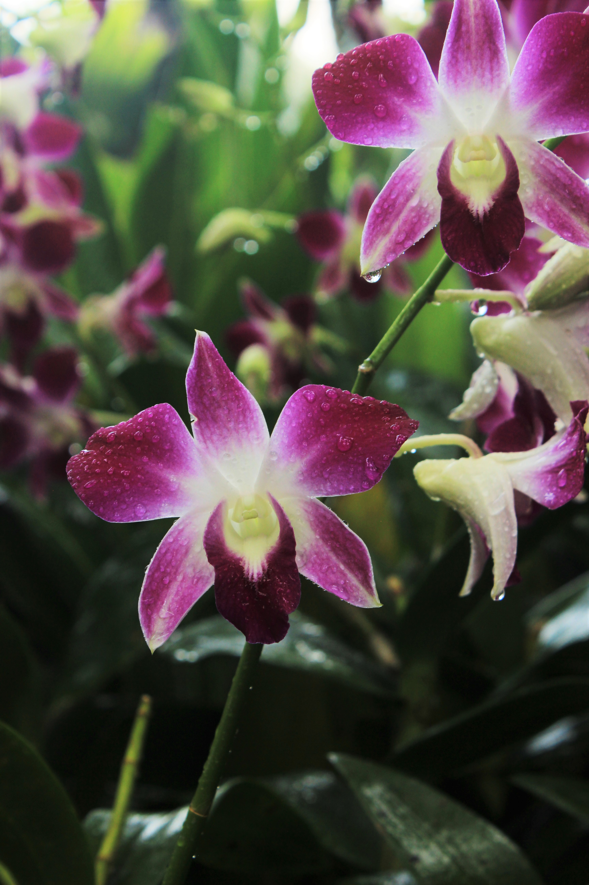
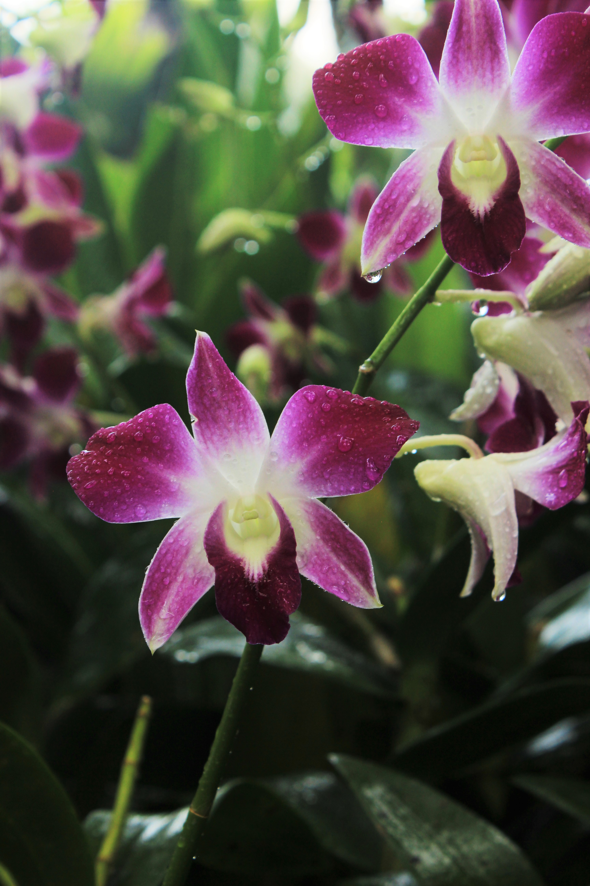
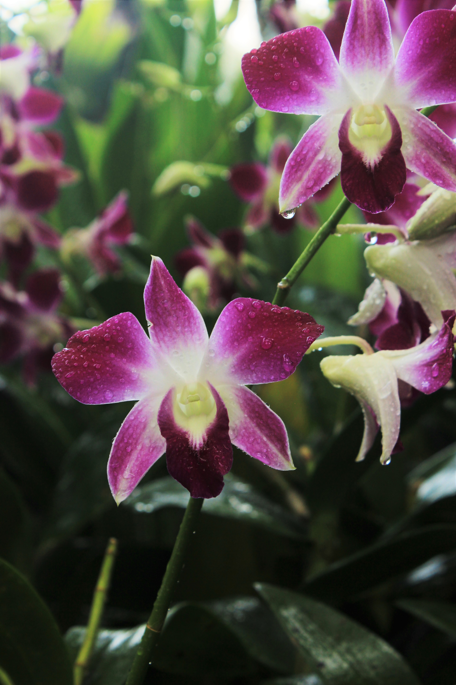

Allison Homem
I specialize in landscape photography, capturing the beauty of the world around me through my Canon© lens.

 

I specialize in landscape photography, capturing the beauty of the world around me through my Canon© lens.

one of my favorite memories - walking around Singapore's Botanical Gardens, after a rainstorm.